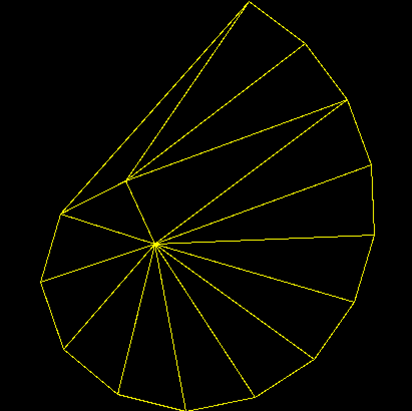
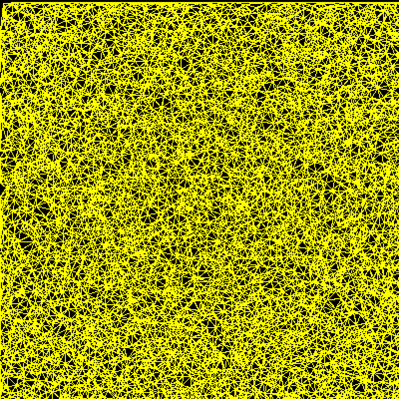
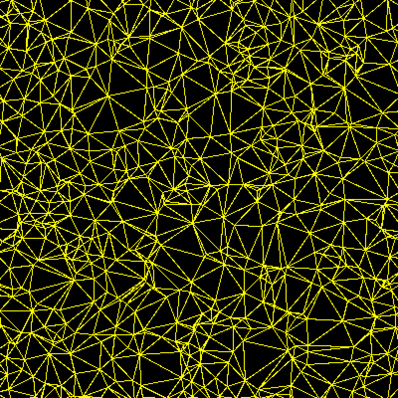
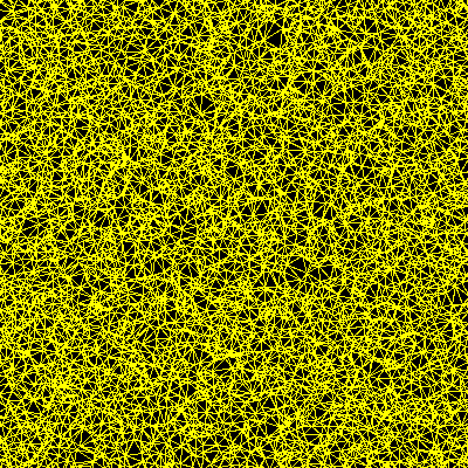
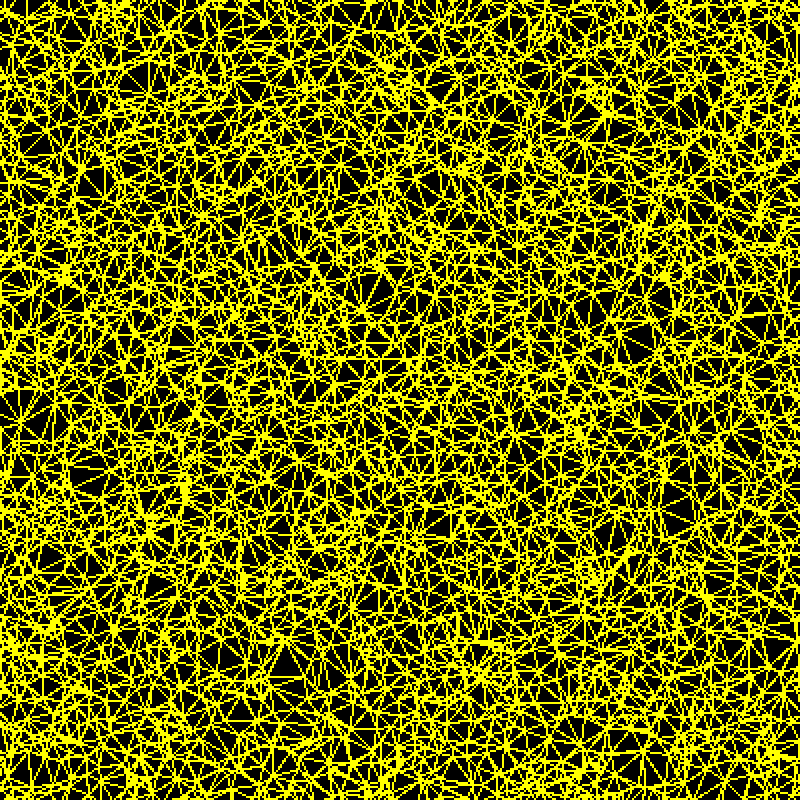

Delaunay Triangulation via Incremental Insertion
Overview
This project implements the incremental insertion algorithm for 2D Delaunay triangulation on top of the Guibas–Stolfi quad-edge data structure. Points are inserted one at a time; after each insertion, edges that violate the empty-circumcircle property are flipped until the triangulation is Delaunay again.
The main question was how much point location (finding the triangle that contains each new point) dominates the running time. I implemented and benchmarked two strategies:
- Walking (
--slow): start from a known edge and walk across neighboring triangles toward the new point. - History DAG (
--fast): keep every triangle that has ever existed in a directed acyclic graph, and descend from the initial bounding triangle through its children to the triangle that contains the point.

How It Works
- Build a large bounding triangle that contains every input point.
- Optionally shuffle the input (
--randomized) so the expected cost stays O(n log n). - For each point, locate its containing triangle (by walking or through the History DAG), then connect the point to that triangle's vertices. Points that land exactly on an edge are handled by splitting the edge.
- Test each edge opposite the new point with the in-circle predicate and flip it if it fails, pushing the newly exposed edges back onto the stack.
- When using the History DAG, record every split and flip as new child nodes so later point locations can descend through them.
Orientation and in-circle tests use Jonathan Shewchuk's geometric predicates, and the output is written as a .ele file for viewing in Show Me.
Results
Running Time
Both methods were run with randomized insertion order on an 8-core Intel i9.
| Points | History DAG | Walking | Speedup |
|---|---|---|---|
| 10,000 | 4.45 s | 5.15 s | 1.16× |
| 100,000 | 53.85 s | 136.13 s | 2.53× |
| 1,000,000 | 669.16 s | > 30 min (DNF) | > 2.6× |
Why the History DAG Wins
Walking can only move between neighboring triangles, so locating each point means crossing a path of about O(√n) triangles, which effectively re-scans the mesh on every insertion. The History DAG keeps the whole evolution of the triangulation as a search structure: the search starts at the bounding triangle and discards large regions of the mesh at each level, so the expected depth is O(log n). The number of geometric tests grows only slightly as the input doubles, and the gap widens with size until walking can't finish 1,000,000 points at all.
right_of orientation predicate. The History DAG needed 120,182, a 94% reduction.
Does Randomization Matter?
On a 25-point 5 × 5 grid using the History DAG, ordered insertion took 0.0127 s and randomized insertion took 0.0100 s, about 20% faster even at this tiny scale. In the ordered grid the first five points are collinear (they all have y = 0), so the algorithm has to work through degenerate cases one after another. Randomizing the order makes the triangulation grow evenly in all directions, which is what keeps the DAG's O(log n) search depth guarantee.
Visualizations
Output triangulations of uniformly random points, viewed in Show Me.




Running It
python main.py <file_path>.node [--fast | --slow] [--randomized | --ordered]--fastuses the History DAG,--slowuses walking. The default is--fast.--randomizedshuffles the insertion order,--orderedkeeps the file order. The default is--randomized.
Credits
- Jonathan Shewchuk's robust geometric predicates
- Guibas & Stolfi, Primitives for the Manipulation of General Subdivisions and the Computation of Voronoi Diagrams (pseudocode for the quad-edge structure)